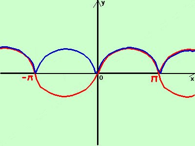

|
sviluppo Data la seguente funzione costruitene approssimativamente il grafico y = |senx|  considero la funzione senza modulo y = senx e' la funzione seno che abbiamo gia' visto taglia l'asse delle x nei punti x = 0 ±kπ con k∈N Disegno la curva (in rosso) ruotando attorno all'asse x perpendicolarmente al piano cartesiano ribalto la parte sotto l'asse x sopra l'asse stesso in blu il risultato finale |